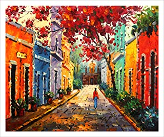

China Art
Country Art is where you can find a lot many art project and sculptures from this country first riddle in China.
- The first is "Seated Buddha, Cave 20, Yungang, Northern Wei Dynasty, ca. 460 C.E."

In the 6th century CE, Buddhist cave chapels and monumental sculptures carved into cliff faces dotted the landscape from central China to modern-day Afghanistan. In fact, you might notice the similarity between these sculptures at Yungang and the famous Buddhas of Bamiyan in Afghanistan, which were tragically destroyed by the Taliban in 2001. These cave chapels were not only places of worship and destinations for pilgrims, they were also considered sacred spaces apart from the mundane world. Of the more than 200 cave chapels at the Yungang site, few are more striking than the enormous seated Buddha of cave 20, which was once vibrantly painted and enclosed inside a massive cave behind a cliff face that has since collapsed. This peaceful seated Buddha embodies the fusion of Chinese, Indian and Central Asian artistic traditions, melding delicate patterning with volumetric depictions of the human figure. On such a scale, the sculpture would have made visiting worshippers feel as though they were in the presence of the Buddha.
PuertoRico art
There is a strong artistic presence among Puerto Ricans, whether from artists formally trained in art schools, or self-taught amateurs. Serious students of Puerto Rican art always go to the Institute of Puerto Rican Culture in the Dominican Convent in Old San Juan. It's the best source of information on the island about Puerto Rican arts and crafts. With its dozen or so museums and even more art galleries, Old San Juan is the greatest repository of Puerto Rican arts and crafts. Galleries sell everything from pre-Columbian artifacts to paintings by relatively contemporary artists such as Angel Botello, who died in 1986. The Galería Botello, at 208 del Cristo St., was his former home. He restored the colonial mansion himself; now his paintings and sculptures are on display there. Another good place to see Puerto Rican art is the Museum of the University of Puerto Rico in Río Piedras. Because of space limitations, the museums galleries can exhibit only a fifth of their vast collection at one time, but the work is always of top-notch quality. The collection ranges from pre-Columbian artifacts to works by today's major painters. The greatest art on the island is at the Museo de Arte de Ponce, Las Americas Avenue, in Puerto Rico's largest city. The collection, donated by former governor Luis A. Ferré, ranges from Jan van Eyck's Salvatore Mundi to Rossetti's confrontational Daugthers of King Lear. The museum building was designed by Edward Durell Stone, who also designed New York's Museum of Modern Art. Works are displayed here in a honeycomb of skylit hexagonal rooms. Puerto Rican artists who are represented include José Campeche (1751-1809) and Francisco Oller (1833-1917). In addition to such European masters as Rubens, van Dyck, and Murillo, the museum features works by Latin American artist, including some by the Mexican Diego Rivera.